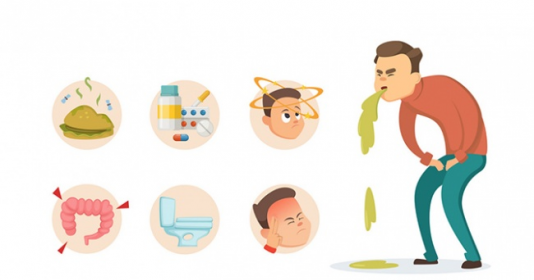

Cuoc
Song
Tot
Cuoc
Song
Tot

các bước sơ cứu khi bị ngộ độc thực phẩm tại nhà
Khi bị ngộ độc thực phẩm thường xuất hiện các triệu chứng sau: Buồn nôn, đau bụng, tiêu chảy, đôi khi có kèm theo các triệu chứng phụ như nhức đầu, chóng mặt, đau cơ, khó thở... tùy theo nguyên nhân gây ngộ độc. Các cách sơ cứu khi bị ngộ độc thức ăn hoàn toàn có thể gồm có :

Gây nôn thường được vận dụng so với những người có bộc lộ muốn nôn ói ngay sau khi ăn phải thực phẩm nhiễm độc hay người còn tỉnh táo, chưa có triệu chứng ngộ độc. Lúc này, người bị ngộ độc thực phẩm cần nhanh gọn dùng mọi giải pháp để nôn hết những thức ăn đã ăn vào. Các phương pháp hoàn toàn có thể vận dụng như uống 1 ly nước muối pha loãng ( 0,9 % ) rồi dùng ngón trỏ móc, ngoáy ( dân gian thường gọi là móc họng ) vào vị trí góc cuống lưỡi gần họng nhằm mục đích kích thích cảm xúc nôn ở người bệnh. Người bệnh nôn được càng nhiều càng tốt. Điều này giúp hạn chế chất độc có trong thực phẩm ngấm vào khung hình, phát tán và gây hại. Những chú ý quan tâm trong lúc gây nôn :
Trường hợp người bị ngộ độc thực phẩm nôn và tiêu chảy nhiều lần hoàn toàn có thể gây
thực trạng mất nước. Lúc này cần cho người bệnh nghỉ ngơi và uống nhiều nước để ngăn
ngừa thực trạng mất nước.
Nếu trẻ bị nôn, hãy cho trẻ uống nước từng ngụm nhỏ để bù nước cho trẻ.
Nếu người bệnh có kèm theo tiêu chảy hoặc chỉ bị tiêu chảy, điều quan trọng nhất là nỗ
lực thay thế sửa chữa chất lỏng và lượng muối đã mất. Lúc này, hoàn toàn có thể sử dụng
dung dịch nước bù điện giải Oresol.
Nếu sử dụng dung dịch oresol để bù nước cho người bệnh, người tương hỗ cần phải đọc kỹ hướng dẫn, pha nước theo đúng liều lượng chỉ định, không sử dụng dung dịch đã pha quá 24 tiếng, không đun sôi dung dịch … Trường hợp, ngộ độc tập thể xảy ra, cần chia dung dịch oresol riêng cho từng người, không uống chung để tránh người bị ngộ độc nhẹ hoàn toàn có thể chuyển biến nghiêm trọng hơn.
Quan sát người bệnh, nếu thấy thực trạng thở khó, cảm xúc không thở được thì nên dùng tay sạch kéo lưỡi người bệnh ra ngoài, tránh tụt vào trong, giúp người bệnh dễ thở hơn.
Trường hợp ngộ độc thực phẩm nặng, người bệnh có thể có các dấu hiệu như loạn nhịp tim, khó thở hay tụt huyết áp.
Sau khi triển khai quá trình sơ cứu ngộ độc thực phẩm gồm có các cách gây nôn, bù nước, … dù thực trạng người bệnh có tín hiệu tỉnh táo vẫn cần được đưa tới các cơ sở ý tế gần nhất để kiểm tra và thực thi triển khai các bước cấp cứu khi thiết yếu. Dựa theo tác dụng nhìn nhận lâm sàng, bác sĩ hoàn toàn có thể chỉ định làm thêm một số ít kỹ thuật như xét nghiệm máu, cấy phân, … nhằm mục đích tìm kiếm sự hiện hữu của vi sinh vật gây bệnh, giúp xác lập đúng mực nguyên do gây ngộ độc thực phẩm và có hướng xử trí tương thích.
Khi phát hiện thực trạng ngộ độc thực phẩm ( trải qua các tín hiệu nhận ra như trên ), người sơ cứu hoàn toàn có thể dùng túi kín lưu giữ lại những mẫu thực phẩm hoài nghi gây ngộ độc hoặc thức ăn người bệnh vừa nôn để bác sĩ hoàn toàn có thể nhanh gọn xác lập đúng chuẩn nguyên do và đưa ra hướng xử lý tương thích. Sau khi thực trạng ngộ độc thuyên giảm, người bệnh cần chú ý quan tâm : Ăn uống từ từ trở lại với những thức ăn nhạt, dễ tiêu như bánh mì, cơm, thịt gà, chuối, … Ngừng ăn nếu cơn buồn nôn quay trở lại. Tránh các mẫu sản phẩm từ sữa, rau sống, caffeine, rượu, nicotin, thức ăn có nhiều chất béo hoặc cay trong vài ngày . Cân nhắc hoàn toàn có thể dùng thuốc acetaminophen để giảm không dễ chịu, tuy nhiên nếu mắc bệnh gan bạn nên tư vấn bác sĩ. Không sử dụng thuốc chống tiêu chảy vì hoàn toàn có thể làm chậm quy trình vô hiệu vi trùng khỏi các cơ quan tiêu hóa.